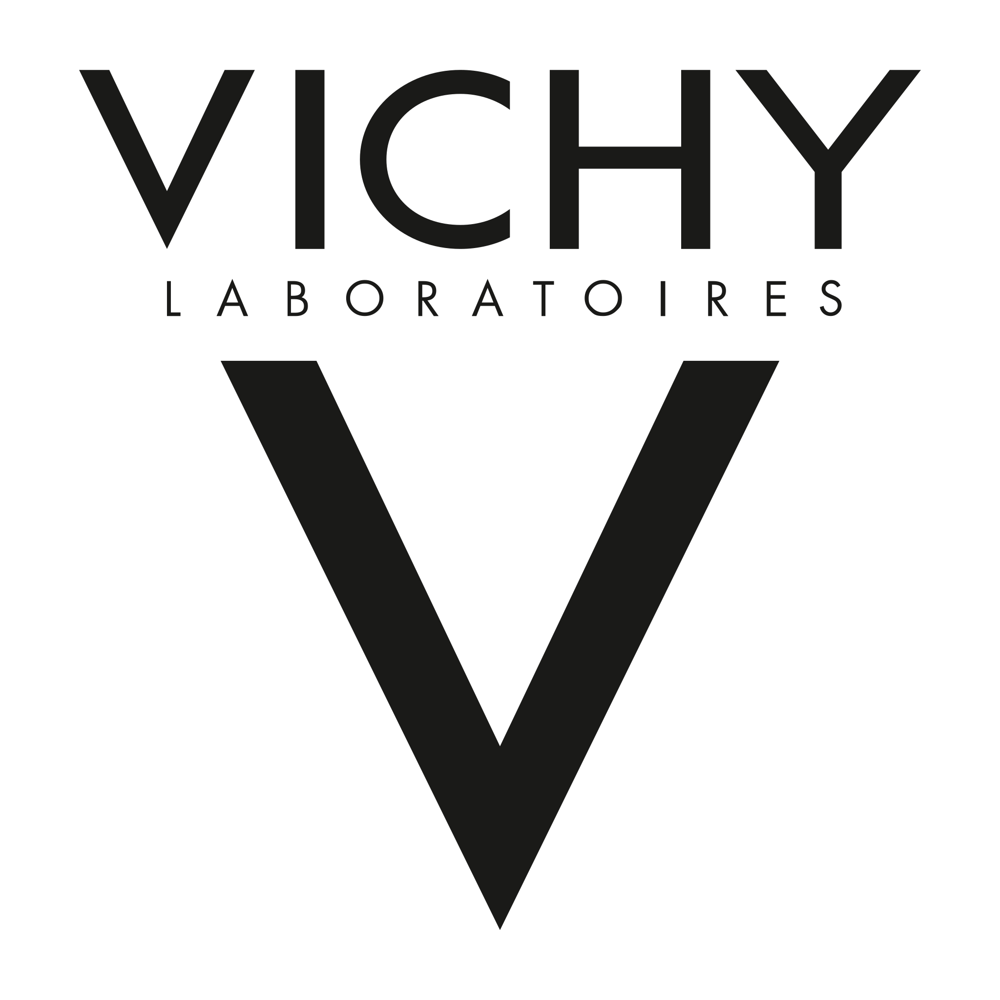
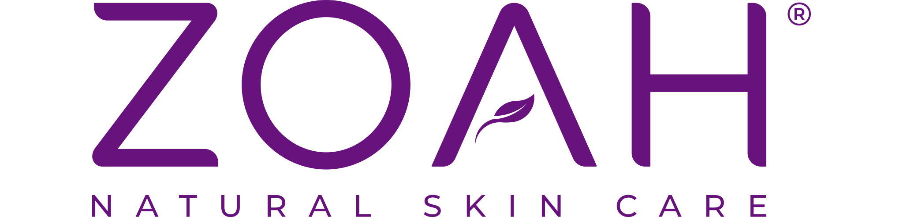
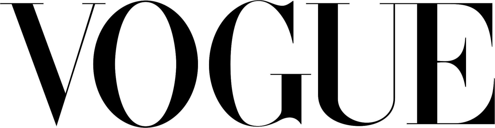
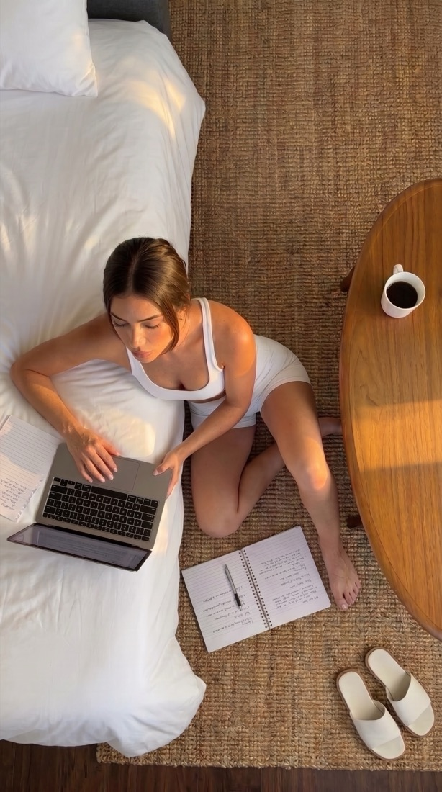
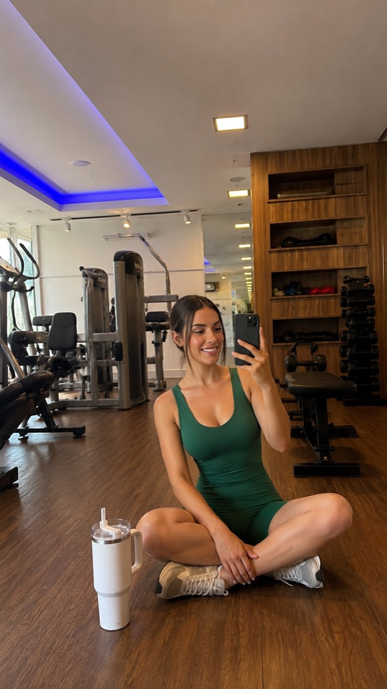
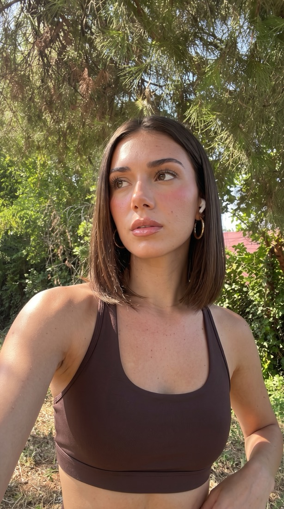
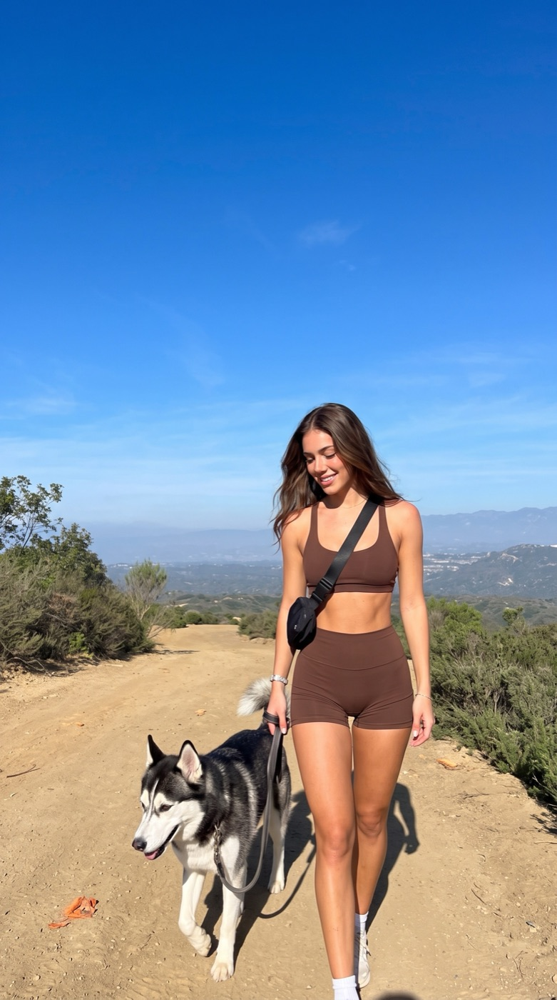
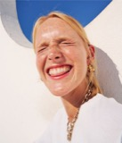
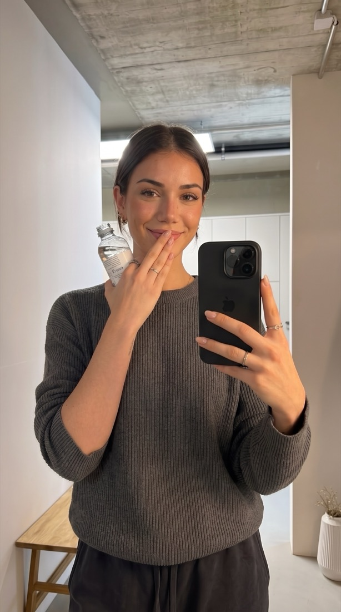

Laura
Creadora de contenido UGC para marcas de belleza, moda y bienestar
Marcas que confiaron en mí




Contenido
Trabajemos juntasRutina de cuidado

Ropa deportiva
Primeras impresiones

Entrenamiento
Reseña honesta

Día al aire libre
Nichos y contenido
Cotiza tu contenidoNichos en los que trabajo
- Belleza y skincareRutinas, texturas, antes y después y primeras impresiones.
- ModaTry-on hauls, outfits y cómo combinar una prenda.
- Bienestar y fitnessEntrenamientos, suplementos y hábitos diarios.
- Lifestyle y hogarMi día a día, productos en casa y momentos reales.
Qué tipo de contenido hago
- Videos UGC para anunciosEjemplo: hook en 3 segundos, problema, solución y llamada a la acción.
- UnboxingEjemplo: abro tu producto y muestro cada detalle por primera vez.
- Reseñas y testimonialesEjemplo: opinión honesta a cámara, como recomendación de amiga.
- TutorialesEjemplo: paso a paso de cómo se usa tu producto.
- Fotografía de productoEjemplo: fotos lifestyle con el producto en uso.
Sobre mí
EscríbemeSoy Laura. Hago videos y fotos que se sienten como la recomendación de una amiga: reales, cercanos y pensados para que tu producto se vea en uso.
Me encargo de la idea, el guion, la grabación y la edición en formato vertical, listo para TikTok, Reels o anuncios.

Lo que dicen de mí
“Laura entendió la visión de nuestra marca desde el primer momento. El contenido superó nuestras expectativas.”
Directora de MarketingTech Innovators
“Su capacidad para contar historias a través de la fotografía es única. Cada proyecto es un éxito garantizado.”

FundadorArtisan Coffee Co.
“El nivel de atención al detalle que Laura le puso a nuestra última campaña fue increíble.”
Directora de ArteFashion Forward
“Logró capturar la esencia de lo que somos en cada toma. Es una verdadera profesional.”

CEOEco Beauty
“Transformó por completo la manera en la que nuestra audiencia nos percibe visualmente.”

Brand ManagerLuxe Events
“Una creatividad desbordante y una técnica impecable. Sus fotos hablan por sí solas.”

Editor en JefeRevista Estilo
